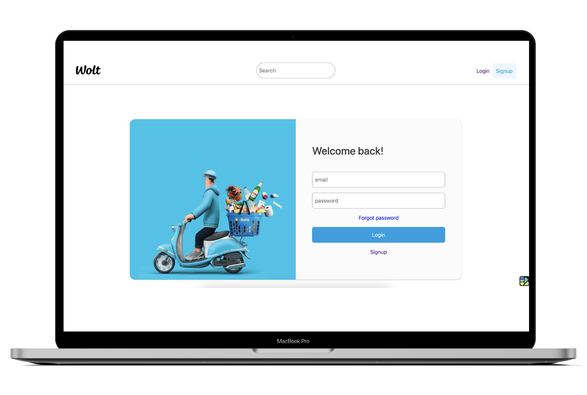
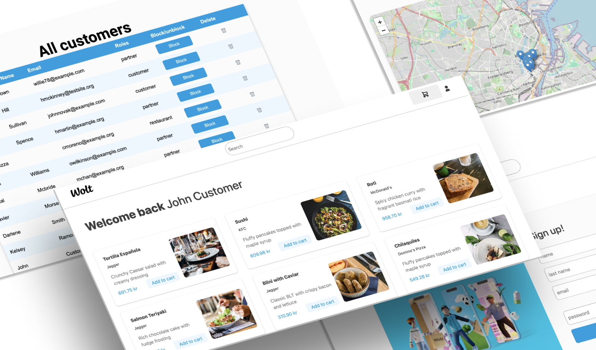
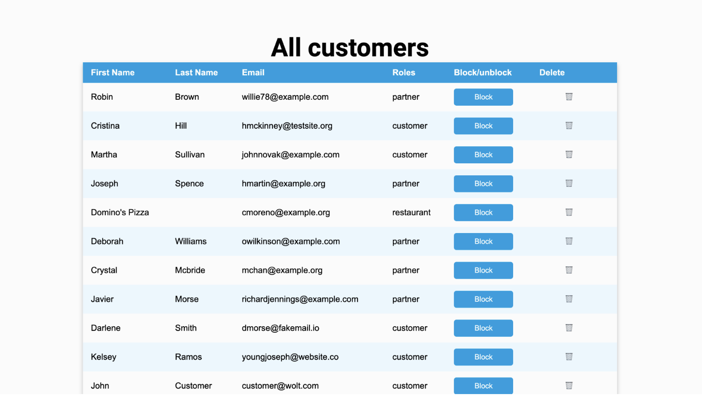
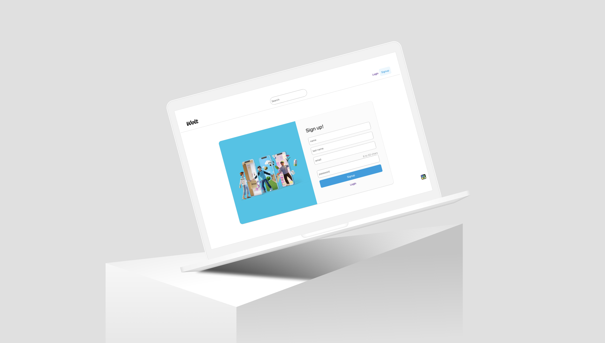

Wolt
Replica
Web Development
For my Web Development exam, I created a food delivery web application inspired by Wolt. The project was built using Python (Flask) for the backend, HTML, CSS, and JavaScript for the frontend, and phpMyAdmin for the database. The app allows partners (restaurants), customers, and an admin to manage their respective functionalities in a secure and user-friendly environment.
The Main Focus
The main focus of this project was on functionality rather than design. The goal was to ensure that all features — including user authentication, account management, and order processing — worked seamlessly and securely. As a result, the design is kept simple and straightforward, prioritizing performance, usability, and backend stability over aesthetic appeal.
  